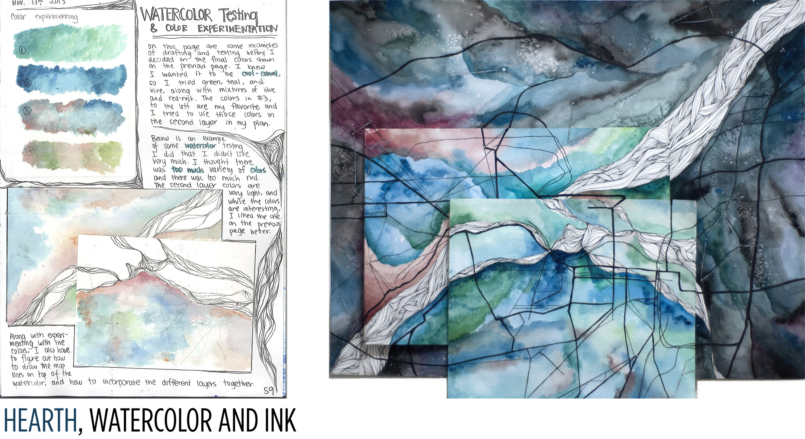
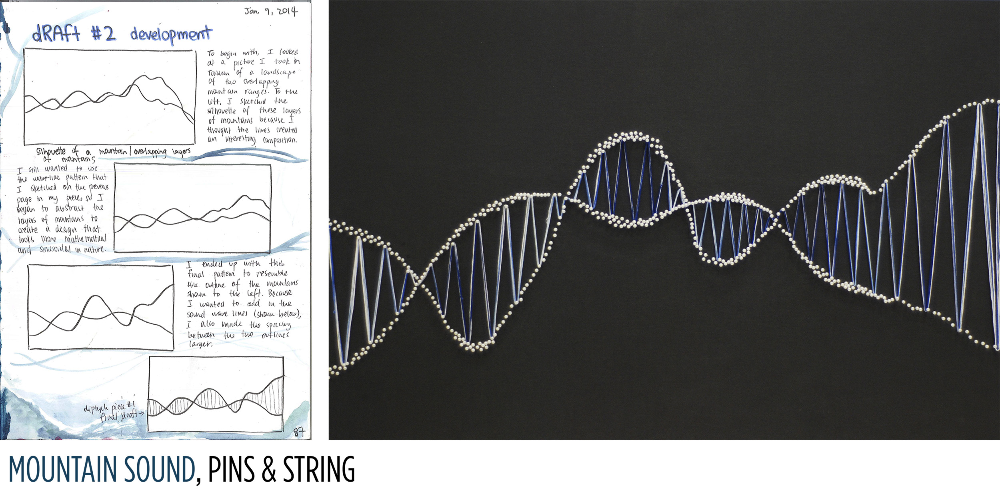
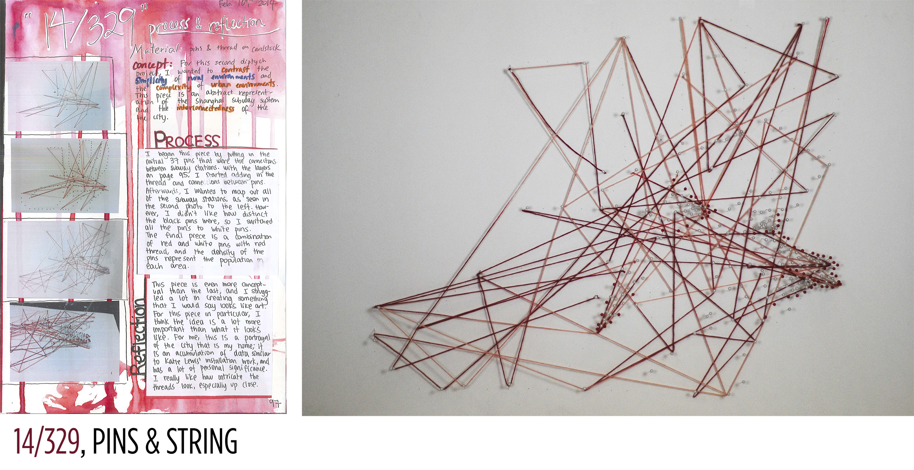
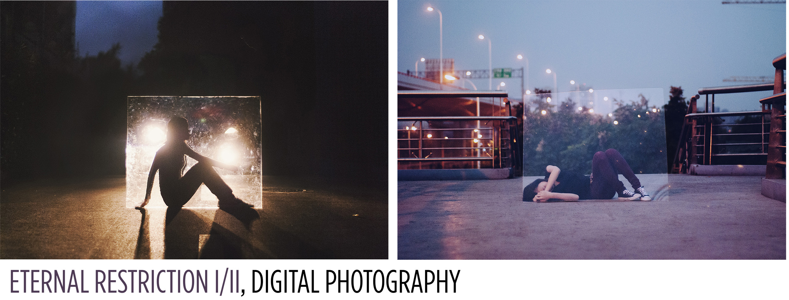
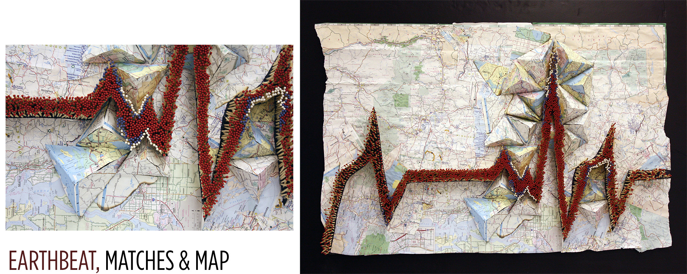

As a child, I moved from place to place to place, never quite having a place called "home". This inspired me to study the importance of such, and furthermore examine the relation between humans and the environment they are a part of. These pieces are various multi-media pieces of artwork that I've created throughout the past few years that study this relation.

"Hearth" is a visual documentation of the three main cities that I've lived in that had an influence on my development - Toledo, Ohio; Augusta, Georgia; Shanghai, China. This piece combines the maps of the three cities, presenting a message about the unity and complexity of my three hometowns.


The pieces "Mountain Sound" and "14/329" are two pieces that explore and contrast urban and rural environments. "Mountain Sound" is a visual representation of two overalapping mountain ranges, intending to look like sound waves. "14/329" is a visual representation of the 14 different metro stations in Shanghai, and the connections between the stations. Through these two pieces, I wanted to contrast the orderliness of natural environments versus the complexity found in urban environments.

"Eternal Restriction I/II" also explores and contrasts urban and rural environments. These photos are self portraits expressing the restriction that different environments have in terms of myself.

"Earthbeat" presents a message about the impermenance of both home and life. The matches are shaped into a heartbeat, expressing the deep tie between location, as represented by the map, and life. Since matches are easily lit on fire and burned, the choice of medium states that, while having a "home" is important, it's also something that can easily change.